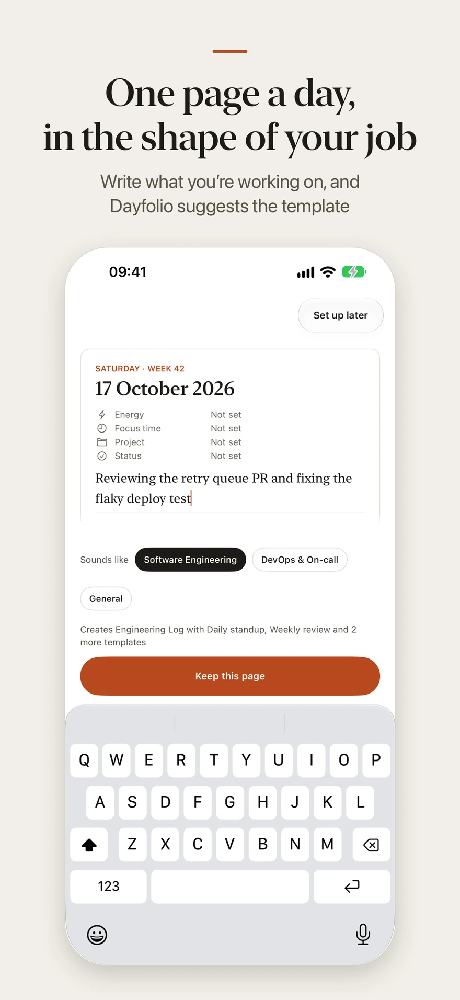
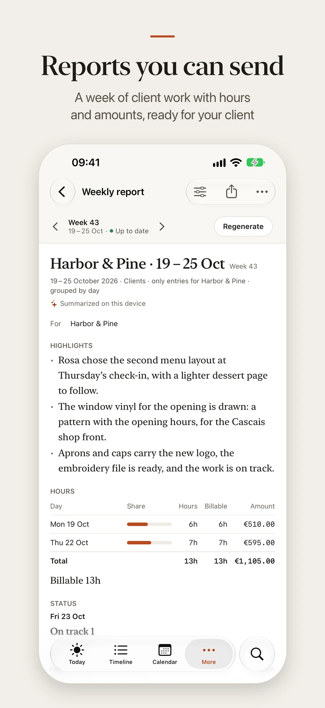
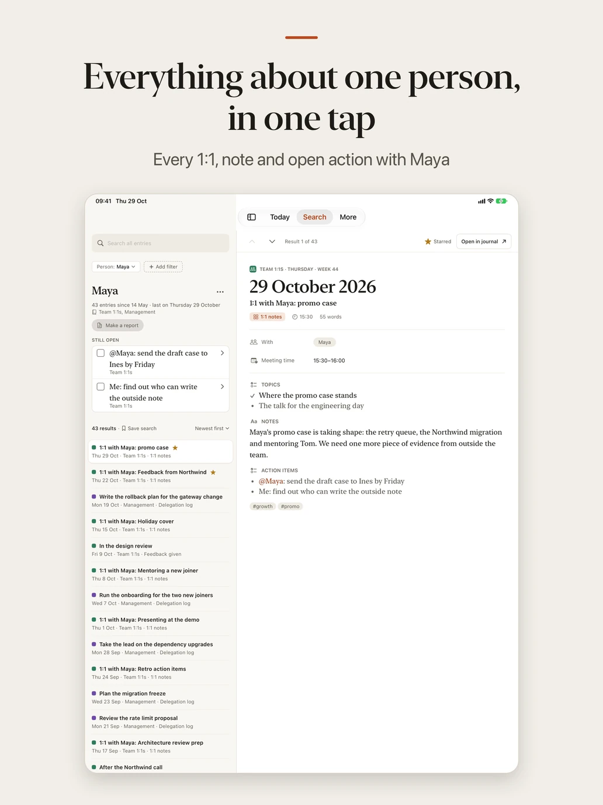
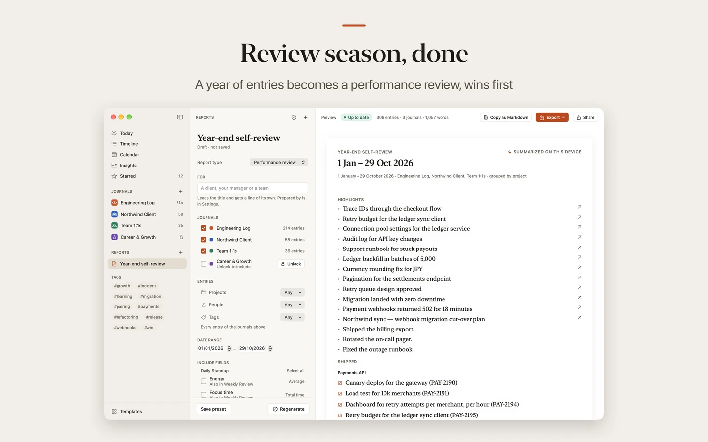
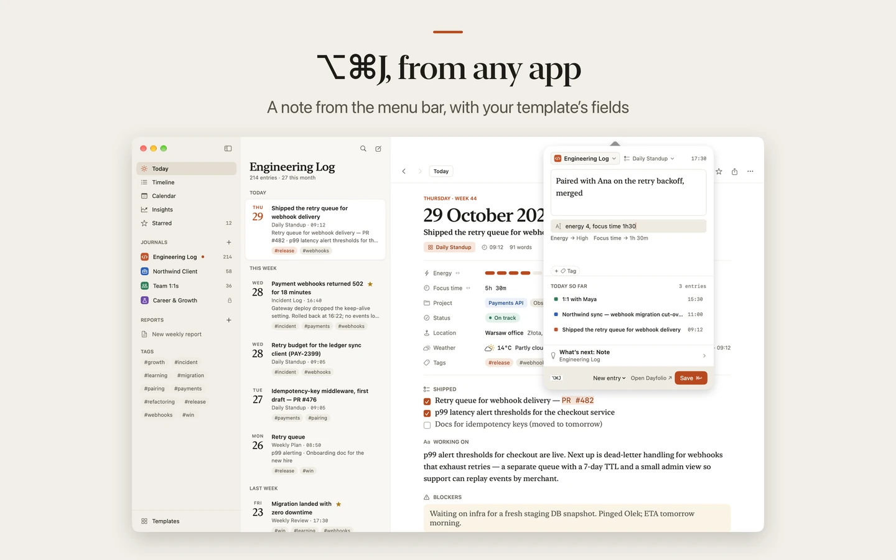

Dayfolio
A calm work journal. One page a day, in the shape of your job. Keep one journal per role or client, start each day from a template made for your work, and turn any week into a report. The same app on iPhone, iPad and Mac, with no account to make.
On iPhone
A 26-second film of Dayfolio on iPhone, with sample journals and no sound:
- Write one line on the first page, and keep the page.
- Turn the page to the day before.
- Pinch the timeline into weeks.
- Hold and slide to set a value.
- Fill the fields in one line.
- Answer a reminder where it appears.
- Your days, as a report ready to send.
Open the film on its own (MP4, 11.4 MB).
At work
05




The pictures show sample journals. Dayfolio follows your device’s light or dark appearance, or the one you choose in its settings.
The details
Keep a separate journal for each role, client or area of work. Every entry starts from a template with the fields that matter to you, such as energy, focus time, status, blockers, a checklist or meeting notes, instead of a blank page. Later, that structure turns your days into a timeline, insights and reports you can hand to your manager or client. Your journals follow you between your iPhone, iPad and Mac through your own iCloud.
Templates made for your work
- A library of 75 templates in 16 packs: software engineering, management, consulting, sales, healthcare, education, legal, construction, research, freelance and more
- Daily logs, stand-ups, 1:1s, incident logs, site logs, weekly reviews, brag documents and a year-end self-review
- Change a library template as you like: add, reorder, rename and retype fields. Making one of your own from scratch comes with the purchase.
- Entries keep the shape they were written in, so editing a template never rewrites your past
- In a 1:1, carried-over fields follow the person: say it is with Maya and the page fills from your last 1:1 with Maya, never with Sam
Write quickly, wherever you are
- Rich text with headings, lists and nested lists, checklists, quotes, code blocks, images and files
- A Fill line that turns "energy 4, focus 2h30" into field values, with the preview before you commit
- On iPhone and iPad: Home Screen and Lock Screen widgets, a Control Center control, Siri, Shortcuts and the Action Button, the Share sheet, and photos, videos and document scans straight into an entry
- A running timer in a Live Activity, on the Lock Screen and in the Dynamic Island
- On the Mac: quick entry from the menu bar with Option-Command-J, and a link that writes a note from a terminal or a git hook
- Reminders at the times you choose, per journal, that you can answer from the notification
- Fill a meeting's time and attendees from your calendar, read on your device
- Each entry can note where you wrote it and what the weather was, if you turn that on for the journal
Find and look back
- Timeline and calendar across all your journals
- Search with filters for journals, templates, tags, people and projects, including text inside PDFs and images
- Open a person or a project to see every entry that mentions them, and what is still open from your lists
- Insights chart your ratings, durations and statuses over time
Turn your days into reports
- Weekly, monthly, performance review and director update reports, and a year-end self-review to start from
- Narrow a report to one client, person or tag, and group it by date, project or person
- Hours that add up: split time by billable or not, give a project an hourly rate in its own currency, and export the time table as CSV
- Address a report with a For line and a Prepared by line
- Save report setups and regenerate them for any week or month
- Optional highlights written on your device with Apple Intelligence, on devices that support it
- Export to Markdown, PDF and Word, or share and print
Private by default
- No account and no tracking. Dayfolio collects no data, and nothing you write is sent to us.
- Lock any journal with Face ID or Touch ID. A journal you lock stays out of widgets, notifications, Spotlight and the app switcher.
- Sync between your devices through your own iCloud, encrypted (end-to-end with Advanced Data Protection)
- Your journals stay yours: a Dayfolio archive restores everything, and its format is public. On the Mac, mirror chosen journals to a folder of Markdown files, such as a notes vault or a Git repository.
The privacy policy says exactly what Dayfolio does with location, calendar, camera, microphone, notifications and iCloud.
What you need
An iPhone or iPad with iOS or iPadOS 26 or later, or a Mac with macOS 26 or later, Apple silicon or Intel. The optional highlights, and the on-device model that fills fields when you log by voice, need a device with Apple Intelligence; everything else works without it. Dayfolio is a native app, built with SwiftUI, and it is in English.
Free to start, no subscription
Dayfolio is free to download. The free version has one journal and 100 entries, with search, export, sync, the lock and reminders all included, and you can make a report and read it on screen. Everything you write stays yours to read, edit and export, whether or not you buy.
Buy Dayfolio for iPhone and iPad, for Mac, or for all three; if you own one, the other is an upgrade at the difference.
| Purchase | US price | What it covers |
|---|---|---|
| iPhone & iPad | $7.99 | Dayfolio on your iPhones and iPads |
| Mac | $19.99 | Dayfolio on your Macs |
| All | $24.99 | iPhone, iPad and Mac |
| Upgrade from Mac | $4.99 | If you own Mac: adds iPhone and iPad |
| Upgrade from iPhone & iPad | $16.99 | If you own iPhone & iPad: adds the Mac |
The purchase adds as many journals and entries as you like, pictures, PDFs and files in entries, templates of your own, and keeping and sending reports. Each is bought once with your Apple Account and covers all your devices on that platform, with no subscription. Prices are in US dollars; in other countries Apple sets the price. Family Sharing is off.
Not what you need? Apple handles refunds at reportaproblem.apple.com. The support page has the details, including how to restore a purchase.